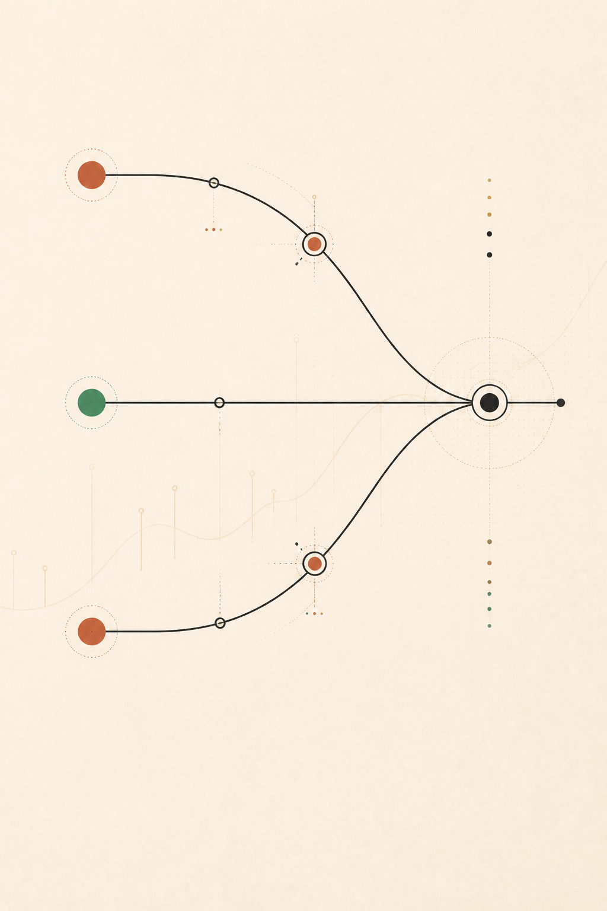
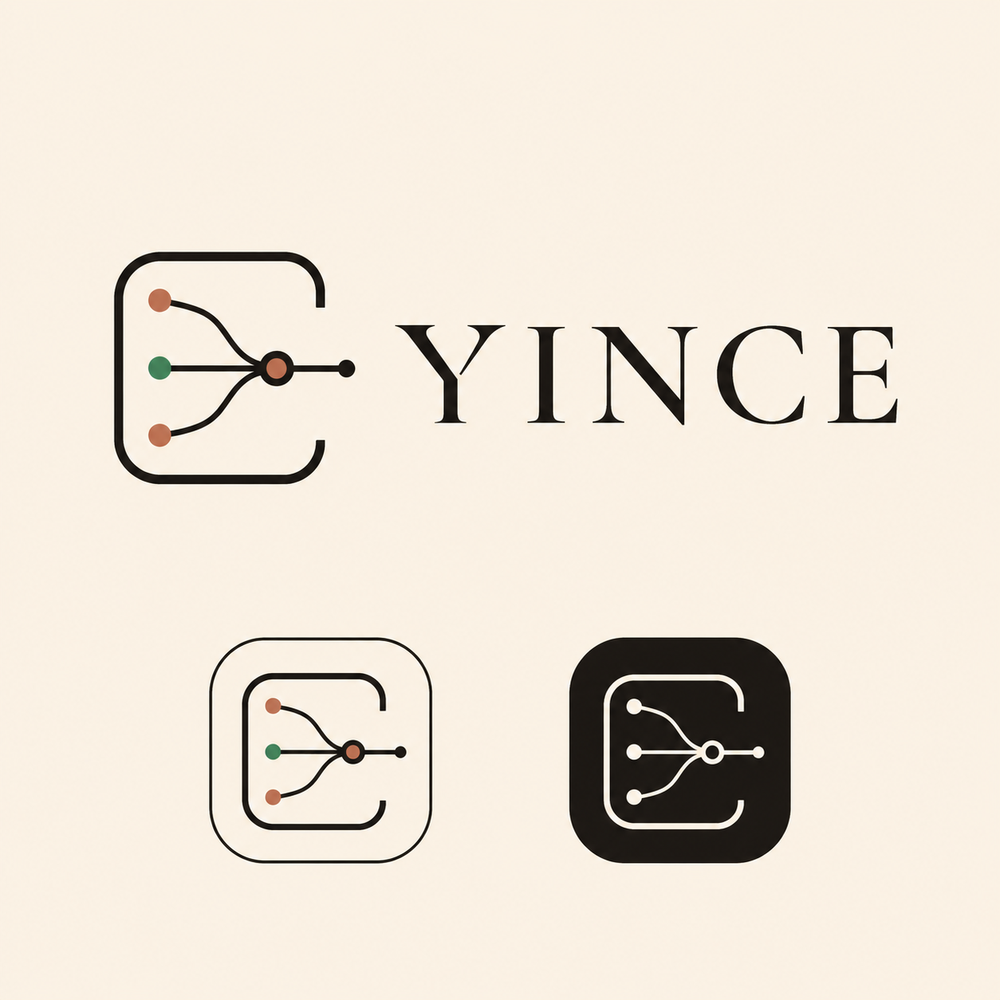
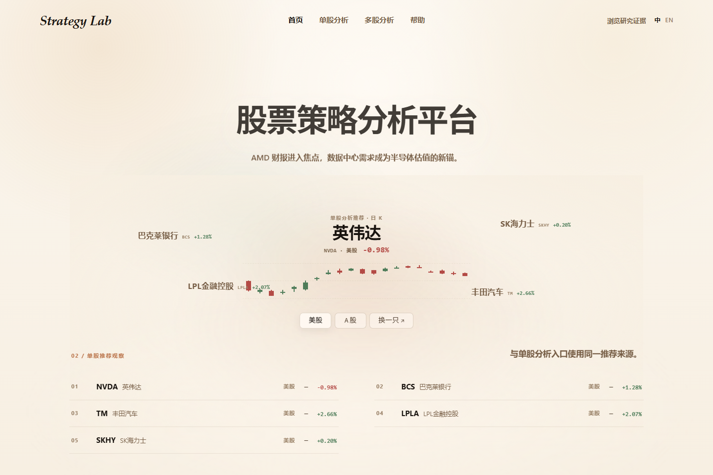

Core idea · 核心创意
给每条研究线，
一条可以核对的证据路径。
每条研究线记录数据来源、冻结配置、gate 决策与证据状态；可用产物能回到原始证据，缺口则明确标记 pending / unavailable。
LOCAL DATA FIRSTWALK-FORWARDMARKET ISOLATIONGATE BEFORE PRODUCT


YINCE · AI Quant Research System
智能量化策略分析平台
Core idea · 核心创意
每条研究线记录数据来源、冻结配置、gate 决策与证据状态；可用产物能回到原始证据，缺口则明确标记 pending / unavailable。

新闻、强势股票与市场镜头建立研究语境。
搜索或上传，查看净值、回撤与绩效。
比较相关性、权重、贡献与周期表现。
按实验、gate、manifest 回溯冻结产物。
Implementation · 实现过程
同一核心链贯通网页与离线研究；research-only 不越过产品边界。
双市场行情 · 冻结快照 · 市场上下文
评分分层 · 筛选 · Composite 候选
SM / FSM / ML / MOE / Composite / Advisor
成本 · walk-forward · purge / embargo · fold
gate · manifest · 哈希 · 报告 · catalog
Research journey · 研究历程
每次叠加都留下证据：过 gate 的继续，缺少增量的停下。
统一评分 + 随机搜索；简单模型成为强基线。
复杂度上升，稳定优势没有同步出现。
MOE 未过产品 gate；Transformer 因 query utility 下降而 STOP。
CN_A 以 10 技术因子 + Ridge 的 pooled 比较领先。
四类 advisory × 七种 policy 完成框架；真实 gate 待验证。